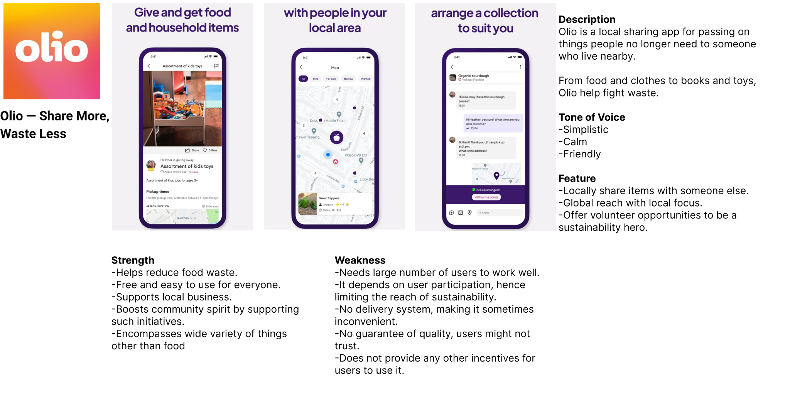
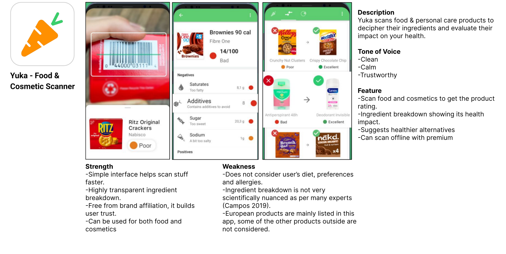

Investigating existing solutions

Key Takeaways
1. The UI of this app is really easy to use, I should also plan on making something
similar.
2. The app currently targets a niche audience of sustainability enthusiasts; to drive real
impact, it must appeal to a broader, less-engaged audience as well.

Key Takeaways
1. This app is not very user centric and may confound the users in some aspects.
Hence, I will place user convenience to the highest.
2. I will respect users’ time and energy by not wasting it.

Key Takeaways
1. Scanning items idea seems pretty interesting, maybe we can use it some other way.
2. I liked the thorough transparency of this app’s suggestions,alternatives etc. It
helps
build trust, we can integrate this.
3. Suggesting alternatives to the user is a better idea rather than shaming them.

Key Takeaways
1. Gamification is a good technique to improve user retention.
2. Incorporating social features enhances engagement, as users are more inclined toward shared, group-based
experiences than solo interactions.
3. Avoid oversimplification; the app should include depth, such as explaining the science behind
sustainable practices, to nurture user curiosity.